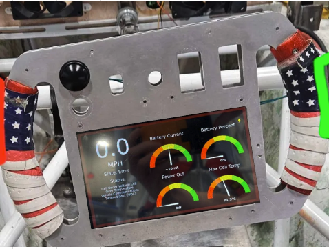
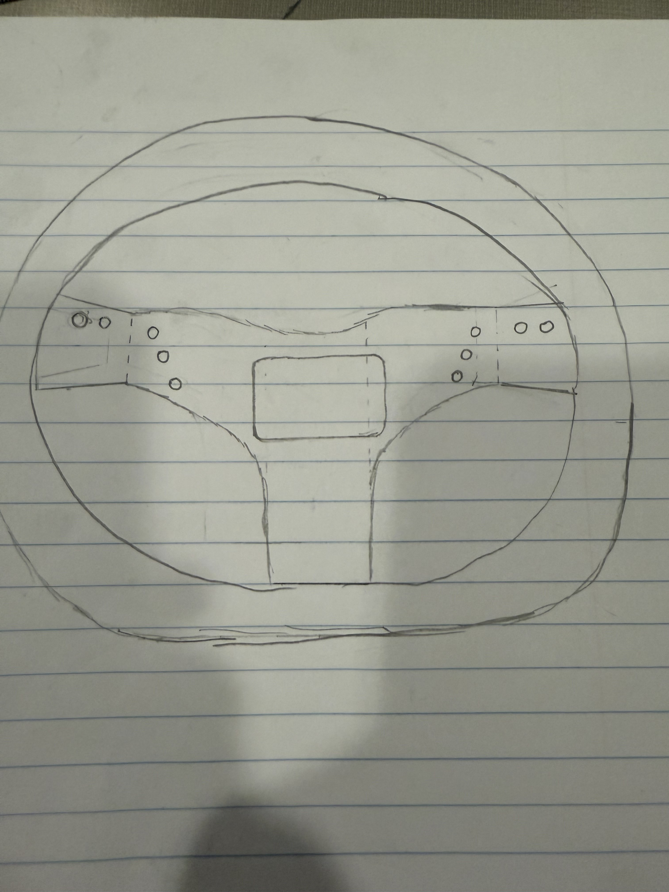
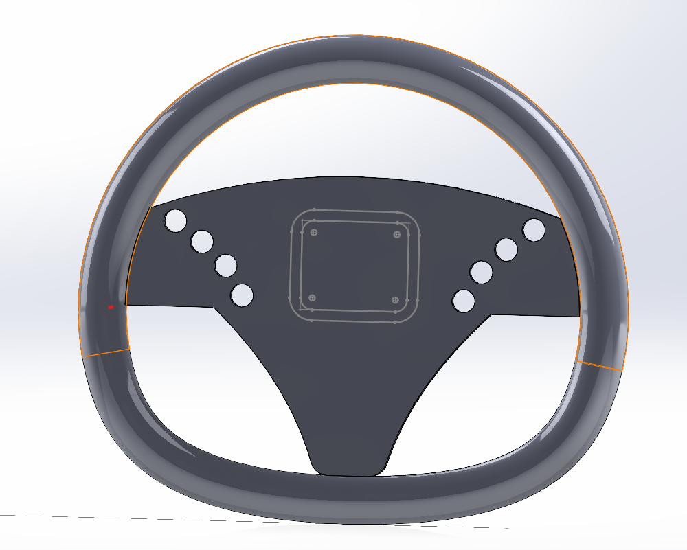
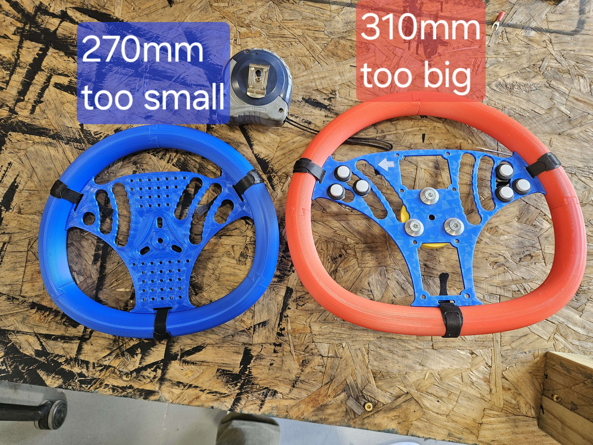
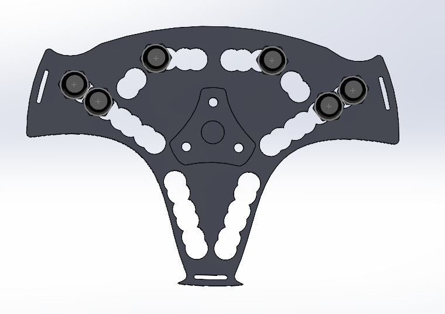
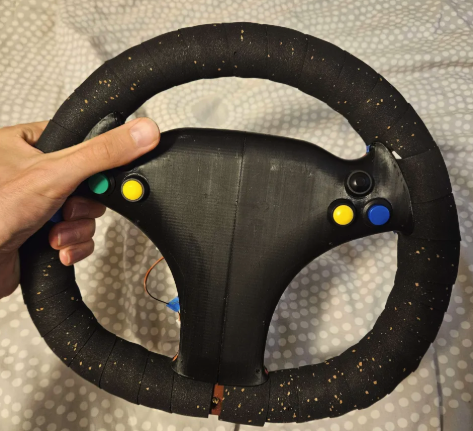

Ergonomical Steering Wheel Development
As part of Virginia Tech's Solar Car team, I contributed to the design and development of Sun Voyager, a fully solar-powered race car built for international endurance competitions. My primary project focused on redesigning the steering wheel through an iterative, driver-centered engineering process involving hand sketches, CAD development, rapid prototyping, and continuous driver feedback.
Driver Experience
The existing Formula 1-inspired wheel kept the cockpit compact, but its rectangular layout reduced steering leverage and became uncomfortable during endurance driving. The redesign needed better ergonomics without disrupting the existing steering interface.

Sketching and CAD Design
Initial concepts explored wheel geometry, display integration, and mounting features before being translated into SolidWorks. These early models established the foundation for physical prototypes and driver feedback.


Prototype, Test, Refine
Driver testing guided the evolution of the design. Prototype diameters of 270 mm and 310 mm bracketed the target before converging on a 285 mm final design. Thumb-reach studies refined control placement across more than 35 CAD iterations.


Manufactured and Driver Tested
The final wheel improved comfort, steering leverage, and control accessibility while integrating with the Sun Voyager cockpit.
